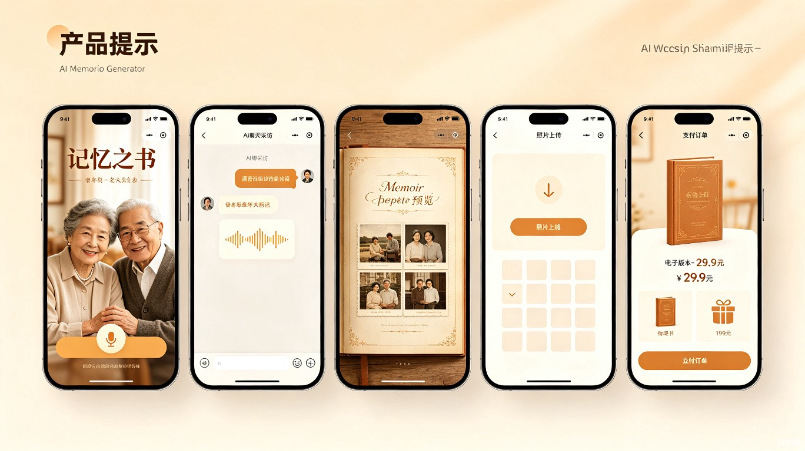

一 产品定位与市场分析
1.1 产品一句话定位
通过AI访谈式对话，自动为老人生成精装回忆录的微信小程序。核心卖点是"送给爸妈一份有温度的礼物"。
1.2 市场规模与机会
据2025年《中国回忆录开发行业市场报告》数据，中国约有2.8亿老年人，其中60%希望拥有回忆录[1]。传统代写服务最低报价1万元，贵的达10万元，实现率不足3%。AI可将成本压至29.9元，价格差300倍以上，这是降维打击。
1.3 竞品格局
| 维度 | 清诺谛听（Animanote） | 小鹿光年 | 本产品 |
|---|---|---|---|
| 团队规模 | 团队型公司 | 3人核心+兼职 | 1人独立开发 |
| 产品形态 | 微信小程序 | 小程序+APP | 微信小程序（轻量） |
| 核心特色 | 双智能体、图片理解、多文风 | 全语音交互、人生地图、故事卡片 | 超低定价、子女送礼模型、极致轻量 |
| 定价 | 未公开 | 月度29元/月、年度239元 | 电子版29.9元、实体书199元起 |
| 付费者 | 未公开 | 超七成为子女[2] | 定位子女送礼（90%+预期） |
| 状态 | V0.2已上线 | 内测中 | MVP开发中 |
二 前期准备（开发前1周）
2.1 账号与资质
注册个人/企业小程序账号，获取AppID。个人账号已足够MVP验证。
接入DeepSeek/GPT-4o-mini/通义千问等。推荐DeepSeek-V3，成本低、中文强。初期月成本控制在200元以内。
微信自带录音API或接入讯飞语音识别（支持方言）。语音合成推荐Azure TTS或Edge TTS（免费）。
提前联系2-3家淘宝/拼多多印刷商，拿到样书报价。精装书印刷成本约40-60元/本。
2.2 技术选型
| 技术栈 | 选择 | 理由 |
|---|---|---|
| 前端框架 | uni-app / 原生小程序 | uni-app跨端、生态丰富；原生更轻量 |
| 后端 | 云开发（微信CloudBase） | 免服务器、免部署，1人开发最优解 |
| 数据库 | 云开发数据库（MongoDB） | 文档型，适合存储对话和回忆录JSON |
| 大模型 | DeepSeek-V3 API | 中文能力强、价格极低（约0.01元/千token） |
| 语音识别 | 讯飞开放平台 | 方言识别领先，适合老年用户 |
| 语音合成 | Edge TTS（免费） | 音色自然，零成本 |
| PDF生成 | 后端Puppeteer/wxhtml2pdf | 将HTML回忆录转为PDF |
| 支付 | 微信支付 | 小程序内直接支付，转化率最高 |
2.3 整体架构

聊天界面 + 回忆录预览 + 照片上传 + 订单支付
采用语音优先交互，大字体、大按钮设计
云函数：对话路由、Prompt管理、回忆录生成、PDF导出
数据库：用户、对话记录、回忆录章节、订单
大模型API（对话生成）、语音识别（讯飞）、语音合成（Edge TTS）
打印对接（后期手动→自动化）
三 核心功能实现方案
3.1 AI访谈系统（核心壁垒）
参考清诺谛听的"双智能体"设计[3]——AI采访者+AI写作者。单人开发不需要做两个独立Agent，用一个模型+两套Prompt即可实现：
采访者Prompt（引导对话）
你是一位温暖、耐心的回忆录采访者。你现在在采访一位{年龄}岁的{称呼}。
你的任务是引导ta讲述人生故事。规则：
1. 每次只问一个问题，问题要具体、有画面感
2. 先问开放性问题打开话题，再追问细节
3. 捕捉情绪，适时共情（"那一定很不容易吧"）
4. 按人生阶段推进：童年→求学→工作→成家→退休
5. 不要一次性问太多，给老人思考时间
6. 如果老人说"不知道/记不清了"，温和换个方向继续
写作者Prompt（整理润色）
请将以下口语化对话整理成回忆录章节。要求： 1. 保留原意的同时进行文学化润色（不虚构事实） 2. 按时间线和主题自动分章节 3. 补充必要的时代背景（如"那是1965年..."） 4. 保持第一人称叙事 5. 降低Temperature至0.3，严格基于用户口述内容 6. 输出结构：章节标题 + 正文（每章800-1500字）
3.2 对话状态机设计
对话需要维护一个生命周期状态机，确保故事采集有节奏、有进度：
| 阶段 | 目标 | 示例问题 | 预期轮数 |
|---|---|---|---|
| 破冰 | 建立信任、收集基础信息 | "您是哪一年出生的？老家在哪里？" | 3-5轮 |
| 童年 | 家庭、邻里、早年记忆 | "小时候过年最开心的事是什么？" | 5-8轮 |
| 求学 | 学校、老师、青春故事 | "上学的路上要走多远？有没有同路的好朋友？" | 5-8轮 |
| 工作 | 职业、奋斗、转折点 | "第一份工作是怎么找到的？" | 5-8轮 |
| 成家 | 爱情、婚姻、育儿 | "第一次见到另一半是什么场景？" | 5-8轮 |
| 退休后 | 晚年生活、人生感悟 | "退休后最享受的事情是什么？" | 3-5轮 |
| 回顾 | 总结人生智慧 | "如果能对年轻时的自己说一句话，您会说什么？" | 2-3轮 |
完成一本完整回忆录约需30-40个故事（每轮对话可产出1-3个故事），每天聊20分钟，约2-3周完成[2]。
3.3 免费版 vs 付费版机制
| 对比项 | 免费版 | 付费版（29.9元） |
|---|---|---|
| 对话次数 | 限30轮 | 不限 |
| 回忆录字数 | 限5000字 | 不限 |
| 章节数 | 最多3章 | 完整章节（7-15章） |
| 照片数量 | 限5张 | 不限 |
| 导出PDF | ❌ | ✅ |
| 打印下单 | ❌ | ✅（另付打印费） |
| AI文风选择 | 1种（默认平实） | 4种（平实/散文/书信/纪实） |
| 子女协作 | 仅查看 | 可点赞、评论、代编辑 |
3.4 打印对接方案
初期量小，采用半自动流程：
用户下单→系统生成PDF→自动发送到企业微信/邮箱→人工对接印刷厂发货
成本最低、最灵活，适合验证期
对接淘宝/拼多多印刷服务商API，自动下单、自动跟踪物流
或使用微信小程序"打印服务"插件
月销1000+后，直接与印刷厂签约，进一步压缩成本至30元/本以内
毛利率可提升至50%+
四 UI布局与交互设计
4.1 设计原则
字号≥18px、按钮≥44px触控区域、高对比度配色
核心操作不超过3步到达
暖色调（米白+琥珀+墨绿）、柔和圆角、老照片质感
每次操作给予温暖文字反馈
老人端：超大按钮、语音优先、简化操作
子女端：完整功能、礼物卡片、进度追踪
4.2 核心页面流程
子女发起流程：

老人聊天流程：

回忆录预览与成书流程：

4.3 关键页面说明
首页（老人端）
- 顶部：用户昵称 + 回忆录进度条（"已完成第3章/共7章"）
- 中部：AI今日问候语（"今天想聊聊工作时候的事吗？"）
- 底部：超大"开始讲述"按钮（麦克风图标）
- 入口：查看回忆录、上传照片、邀请家人
AI聊天页
- 气泡式对话，AI消息用左侧气泡，用户用右侧
- 底部固定一个大麦克风按钮（长按说话，松开发送）
- 支持文字输入（子女协助时使用）
- 顶部显示当前人生阶段进度（童年→求学→...）
回忆录预览页
- 仿实体书翻页效果，章节目录清晰
- 支持嵌入老照片（上传后AI自动匹配合适章节）
- 子女可在线预览、点赞、添加评论留言
五 盈利模式与定价（完整循环）
5.1 收入模型
| 收入来源 | 定价 | 目标用户 | 成本 | 毛利率 |
|---|---|---|---|---|
| 电子版回忆录 | 29.9元/本 | 子女（送父母礼物） | API约2-3元 | ~90% |
| 精装实体书 | 199元起 | 子女/老人 | 印刷40-60元+运费 | 30-40% |
| 故事卡片/画册 | 49元起 | 子女（生日礼物） | 印刷15-20元 | 50-60% |
| 会员订阅 | 9.9元/月 | 重度用户/多老人家庭 | API消耗 | ~95% |
5.2 盈利循环设计

5.3 "心甘情愿付费"的心理学设计
页面展示"传统代写1万元起"，对比之下29.9元显得超值
用户感知价值被大幅放大
"爸妈的回忆，错过就再也没了"——制造紧迫感
"每年花2000元给父母买保健品，不如花29.9元帮他们留下一本书"
分享海报设计精美，配文"我为爸妈写了一本回忆录"
朋友圈晒出来有面子，促使用户主动传播
免费版限5000字、3章——让用户看到"差一点就完整了"
已投入的时间+情感成为沉没成本，付费完成变得顺理成章
5.4 扩展变现机会
轻量化内容衍生品（参考小鹿光年思路[2]）
- 旅游画册：老人只讲旅行故事，10个故事即可成册，售价49元
- 生日月历：回忆录中的AI生成插图做成月历，每页配一段人生故事
- 故事冰箱贴：将关键人生片段制成冰箱贴套装
- 音频故事相框：老人原声+AI配乐，制成可播放的电子相框
六 推广策略：子女驱动，老人受益
6.1 核心洞察
6.2 推广渠道（按优先级）
| 梯队 | 渠道 | 内容方向 | 预算 | 操作方式 |
|---|---|---|---|---|
| 第一梯队 | 小红书 | "送过最走心的礼物""奶奶对着手机讲半个月，AI帮她出了一本书""我爸收到这本书哭了半小时" | 0元 | 自己运营1-2个账号，AI辅助生成文案和配图，每天1篇笔记 |
| 第二梯队 | 抖音/视频号 | 15秒短视频展示"老人说话→AI生成书"全过程；情感类短片 | 0元 | AI生成脚本+剪映自动剪辑，日更1-2条 |
| 第三梯队 | 微信生态 | 公众号软文、朋友圈广告（定向40-60岁）、社群裂变海报 | 500-2000元/月 | 投放中老年/家庭类公众号，朋友圈日预算50元测试 |
| 第四梯队 | 线下触点 | 社区老年大学体验课、养老院增值服务、老年活动中心 | 0-500元 | 联系负责人免费提供AI回忆录体验，每点带来10-30用户 |
6.3 关键场景投放时机
"今年给爸一份不一样的礼物"
提前2周开始内容预热+广告投放
"帮妈妈记录她最美的人生故事"
主打女性情感消费
"团圆时节，听老人讲过去的故事"
结合节日情感营销
"用一本回忆录代替千篇一律的生日礼物"
产品内提醒功能：子女输入父母生日，提前推送
6.4 AI赋能推广的具体方案
作为单人开发者，AI是你最重要的"团队成员"：
- 内容生产：用AI批量生成小红书/抖音文案，你只需审核微调即可日更。AI可自动分析爆款笔记结构并仿写
- 图片制作：用AI生成配图、海报模板、产品展示图，无需设计功底
- 视频制作：AI生成脚本→剪映模板自动生成短视频，每天产出3-5条
- 用户反馈分析：将用户评价、评论喂给AI，自动提炼优化方向
- UI迭代：用AI快速生成新UI方案，手动调整为小程序页面，1天可迭代一版
6.5 裂变机制
七 开发周期与难度评估
7.1 MVP开发计划（2-3周）
Day1-2：小程序项目搭建、云开发配置、数据库设计
Day3-4：AI对话接口对接、采访者Prompt调试
Day5-7：聊天UI（语音按钮、消息气泡）、对话状态管理
Day8-9：写作者Prompt调试、章节自动生成逻辑
Day10-11：回忆录预览UI、照片上传功能
Day12-14：微信支付接入、免费/付费版逻辑、PDF导出
Day15-16：子女端"代发起"模式、邀请码/分享海报
Day17-18：全面测试、适老化UI打磨、Prompt精调
Day19-21：提交审核、准备推广素材、软启动
7.2 开发难度评估
| 模块 | 难度 | 预估工时 | 风险点 |
|---|---|---|---|
| 小程序框架搭建 | ⭐⭐ | 1天 | 云开发配置 |
| AI对话系统 | ⭐⭐⭐⭐ | 3-4天 | Prompt调优是核心难点 |
| 语音识别+合成 | ⭐⭐⭐ | 2天 | 方言识别准确率 |
| 回忆录生成 | ⭐⭐⭐⭐ | 2-3天 | 章节划分逻辑、文学化润色质量 |
| 照片管理 | ⭐⭐ | 1天 | 图片压缩、存储成本 |
| 支付+订单 | ⭐⭐⭐ | 2天 | 微信支付资质审核 |
| PDF导出 | ⭐⭐⭐ | 1-2天 | 排版质量、中文字体嵌入 |
| 分享裂变 | ⭐⭐ | 1天 | 海报生成（canvas绘图） |
| 打印对接 | ⭐⭐ | 1天 | 初期手动即可 |
八 风险与应对
| 风险 | 概率 | 影响 | 应对策略 |
|---|---|---|---|
| 大模型API费用超支 | 中 | 高 | 免费版限制30轮对话，监控日调用量，设置预算告警 |
| 老人不会用小程序 | 高 | 高 | 子女"代发起"模式，老人只需点一个按钮说话 |
| 内容质量不够好 | 中 | 高 | 持续优化Prompt，参考清诺谛听160小时访谈语料训练思路[3] |
| 语音识别不准 | 中 | 中 | 选讯飞（方言能力强），持续测试新模型 |
| 打印质量不可控 | 中 | 中 | 初期选2-3家印刷商测试样书，选品控最好的长期合作 |
| 微信审核不通过 | 低 | 中 | 避免"医疗""养老""老年病"等敏感词，定位为"人生记录工具" |
| 竞品跟进降价 | 中 | 低 | 29.9元已是极低价，更依赖送礼场景差异化而非纯价格战 |
| 付费转化率低 | 中 | 高 | 优化免费版体验让用户"上瘾"，精准打击送礼场景 |
九 关键成功指标（前3个月）
收入构成预期：200-500单电子版（29.9元×300单≈9000元）+ 10-20单实体书（199元×15单≈3000元）= 约12000元/月。
十 单人开发"取巧"哲学
省去下载门槛，老人点开即用，开发周期减半
一个模型搞定采访+写作，技术复杂度降低80%
轻资产运营，零库存风险
付费者与使用者分离，抓住"情感消费"决策链
先跑通"对话→生成→付费"核心闭环
AI辅助内容生产，0成本获客起步
"6800万老人有需求，传统代写最低1万元。
你用29.9元+199元切入这个市场，价格差了300倍。
这不是竞争，这是降维打击。"